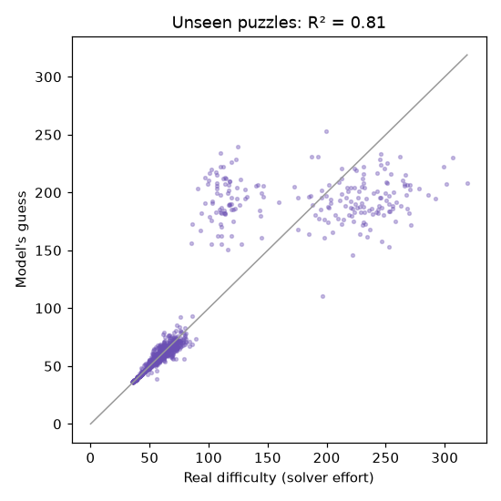

How it works
Five small pieces of machine learning (ML) help behind the scenes. Where you see a score below, it was measured on puzzles the model never studied: we hid part of the data while it learned, then tested it on that hidden part.
1. Difficulty model
Each puzzle is turned into 17 numbers (feature engineering), and a model of many small decision trees (gradient boosting) learns to predict how hard it is without solving it. How much of the real difficulty it explains (higher is better):
The biggest clue it uses: how many cells are still empty after simple forced moves. Adding that feature raised the score from – to –.

2. Nightly puzzle picker
Every night, 30 candidate puzzles are made per level. The difficulty model scores them and the one closest to the level's target is published. Easy stays easy, Hard stays hard.
3. Hint button
Several moves are usually possible. A model scores each and suggests the one that unlocks the most new easy moves. Average usefulness lost compared with the best move (lower is better):
4. Just right for you
After every puzzle you finish, a tiny model learns how long you take at each difficulty (one small correction per solve, called stochastic gradient descent). It then picks the level that should take you about 8 minutes. It lives on your phone only.
5. Guess and stuck nudges
A classifier estimates the chance a number you typed is right, without seeing the answer. A separate detector learns your usual pause length and speaks up only when a pause is unusual for you. Accuracy of the guess classifier:
These models were trained on puzzles made by a program and on simulated play, not on real players yet. They learn your pace on this phone as you play.